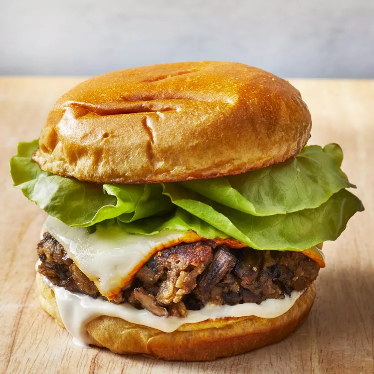

Mushroom Veggie Burger

Description
These vegetarian mushroom burgers are as close as it gets to delicious meat burgers. Mushrooms really
give them a meaty flavour.
Ingredients
- 4 tablespoons olive oil, divided
- 3(8 ounce) packages sliced fresh mushrooms
- 1/2 medium onion, finely chopped
- 4 cloves garlic, minced
- 1 teaspoon salt
- 1/2 teaspoon black pepper
- 1/2 teaspoon dried oregano
- 3/4 cup dry bread crumbs
- 2/3 cup rolled oats
- 1/2 cup freshly shredded parmigiano-reggiano cheese
- 2 large eggs, beaten
Directions
- Heat 2 tablespoons oil in a large skillet over medium heat. Add mushrooms, onion, garlic, salt,
pepper, and oregano; cook and stir until mushrooms have released their juices and the liquid has
evaporated, about 10 minutes. Remove from the heat.
- Transfer mushrooms to a cutting board and clean the skillet.
- Chop mushrooms into small chunks, then transfer to a large bowl. Mix in bread crumbs and oats, and
season with salt and pepper as needed. Stir in Parmigiano-Reggiano cheese, then eggs; let stand until
bread crumbs have absorbed any excess liquid, about 15 minutes. Use moist hands to form mixture, 1/4
cup at a time, into patties.
- Heat remaining 2 tablespoons oil in the skillet over medium heat. Pan-fry patties in the hot skillet
until golden brown and cooked through, 2 to 3 minutes per side.